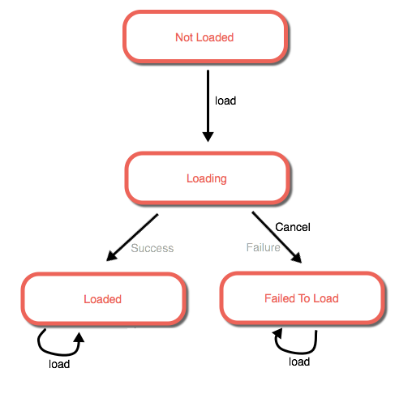

Introduction
This section discusses programming patterns and best practices for writing applications with the ArcGIS API for JavaScript.
Loading Classes
After getting the ArcGIS API for JavaScript, use require() to asynchronously load ArcGIS API for JavaScript classes into an application.
The method requires two parameters:
- An array of ordered strings as the full namespaces for each imported API class
- Each API class is loaded as the positional arguments in a callback function
For example, to load the Map and MapView class, first go to the documentation and find the full namespace for each class. In this case, Map has the namespace "esri/Map" and the namespace for MapView is "esri/views/MapView". Then pass these strings as an array to require(), and use the local variable names Map and MapView as the positional arguments for the callback function:
require(["esri/Map", "esri/views/MapView"], function(Map, MapView)
// The application logic using `Map` and `MapView` goes here
});
Not every module needs to be loaded with require(), as many classes can be initialized from within a constructor using autocasting.
Learn more about the AMD module format with the Dojo Toolkit introduction to AMD modules.
Constructors
All classes in the ArcGIS API for JavaScript have a single constructor, and all properties can be set by passing parameters to the constructor.
For example, here is an example of calling the constructor for the Map and MapView classes.
var map = new Map({
basemap: "topo-vector"
});
var view = new MapView({
map: map,
container: "map-div",
center: [ -122, 38 ],
scale: 5
});
Alternatively, the properties of class instances can be specified directly using setters.
var map = new Map();
var view = new MapView();
map.basemap = "topo-vector"; // Set a property
var viewProps = { // Object with property data
container: "map-div",
map: map,
scale: 5000,
center: [ -122, 38 ]
};
view.set(viewProps); // Use a setter
Properties
The ArcGIS API for JavaScript supports a simple, consistent way of getting, setting, and watching all properties of a class.
Many API classes are subclasses of the Accessor class, which defines the following methods.
| Method Name | Return Type | Description |
|---|---|---|
get(propertyName) | Varies | Gets the value of the property with the name propertyName |
set(propertyFields) | N/A | For each key/value pair in propertyFields, this method sets the value of the property with the name key to value |
watch(propertyName, callback) | WatchHandle | Calls the callback function callback whenever the value of the property with the name propertyName changes |
Getters
The get method returns the value of a named property.
This method is a convenience method because, without using get(), to return the value nested properties, e.g., to return the title of the property basemap of a Map object, requires an if statement to check whether basemap is either undefined or null.
var basemapTitle = null;
if (map.basemap) { // Make sure `map.basemap` exists
basemapTitle = map.basemap.title;
}
The get method removes the need for the if statement, and returns the value of map.basemap.title if map.basemap exists, and null otherwise.
var basemapTitle = map.get("basemap.title");
Setters
The values of properties may be set directly.
view.center = [ -100, 40 ];
view.zoom = 6;
map.basemap = "oceans";
When several property values need to be changed, set() can be passed a JavaScript Object with the property names and the new values.
var newViewProperties = {
center: [ -100, 40 ],
zoom: 6
};
view.set(newViewProperties);
Prior to 4.x, some properties could be get or set by calling getMethodname() or setMethodname(). These getter and setter methods are no longer supported.
Watching for Property Changes
Watching property changes are handled with watch(), which takes two parameters:
- A property name as a
String, and - A callback function that is called whenever the property value changes
A WatchHandle instance is returned by watch().
The following code sample watches the basemap.title property of a Map object, and calls the titleChangeCallback function whenever the basemap title value changes.
var map = new Map({
basemap: "streets-vector"
});
function titleChangeCallback (newValue, oldValue, property, object) {
console.log("New value: ", newValue,
"<br>Old value: ", oldValue,
"<br>Watched property: ", property,
"<br>Watched object: ", object);
};
var handle = map.watch('basemap.title', TitleChangeCallBack);
For example, if the basemap property changes:
map.basemap = "topo-vector";
Then the titleChangeCallback function is called and the following is printed to console:
New value: Topographic
Old value: Streets
Watched property: basemap.title
Watched object: ... // This will log the map object
The remove method can be called on a WatchHandle object to stop watching for changes.
handle.remove();
Not all properties can be watched, including collections. Register an event handler to be notified of changes to a collection.
Note: Because both the
FeatureLayer.sourceandGraphicsLayer.graphicsproperties are collections, useon()instead ofwatch()to be notified of changes to the values of these properties.
Autocasting
Autocasting is used to cast JavaScript objects as ArcGIS API for JavaScript class types without the need for these classes to be loaded with require().
In the following code sample, five API classes are needed to create a SimpleRenderer for a FeatureLayer.
require([
"esri/Color",
"esri/symbols/SimpleLineSymbol",
"esri/symbols/SimpleMarkerSymbol",
"esri/renderers/SimpleRenderer",
"esri/layers/FeatureLayer",
], function (
Color, SimpleLineSymbol, SimpleMarkerSymbol, SimpleRenderer, FeatureLayer
) {
var layerURL = "https://services.arcgis.com/V6ZHFr6zdgNZuVG0/arcgis/rest/services/WorldCities/FeatureServer/0";
var orangeColor = new Color([255, 128, 45]);
var blackColor = new Color([0, 0, 0]);
var symbol = new SimpleLineSymbol({
style: "dash-dot",
color: blackColor
});
var diamondSymbol = new SimpleMarkerSymbol({
style: "diamond",
color: orangeColor,
outline: symbol
});
var renderer = new SimpleRenderer({
symbol: diamondSymbol
});
var layer = new FeatureLayer({
url: layerURL,
renderer: renderer
});
});
This code can be simplified by only using require() to load the FeatureLayer class and using autocasting to construct new symbol, renderer, and color objects.
require([ "esri/layers/FeatureLayer" ], function (FeatureLayer) {
var layerURL = "https://services.arcgis.com/V6ZHFr6zdgNZuVG0/arcgis/rest/services/WorldCities/FeatureServer/0";
var layer = new FeatureLayer({
url: layerURL,
renderer: { // autocasts as new SimpleRenderer()
symbol: { // autocasts as new SimpleMarkerSymbol()
type: "simple-marker",
style: "diamond",
color: [ 255, 128, 45 ], // autocasts as new Color()
outline: { // autocasts as new SimpleLineSymbol()
style: "dash-dot",
color: [ 0, 0, 0 ] // autocasts as new Color()
}
}
}
});
});
To know whether a class can be autocasted, look at the ArcGIS API for JavaScript reference for each class. If a property can be autocasted, the following image will appear:
For example, the documentation for the property renderer of the FeatureLayer class has an autocast tag, which means that this property can be autocasted.
Notice the code using autocasting is simpler and is functionally identical to the above code snippet where all the modules were required(). The ArcGIS API for JavaScript will take the values passed to the properties in the constructor and instantiate the typed objects internally.
Keep in mind there is no need to specify the type on properties where the module type is known, or fixed. For example, look at the outline property in the SimpleMarkerSymbol class from the snippet above. It doesn't have a type property because the only Symbol subclass with an outline property is SimpleLineSymbol.
var diamondSymbol = {
type: "simple-marker",
outline: {
type: "simple-line", // Not needed, as type `simple-line` is implied
style: "dash-dot",
color: [ 255, 128, 45 ]
}
};
In cases where the type is more generic, such as FeatureLayer.renderer, then type must always be specified for autocasting to work properly.
All code samples document whether a class or property is being autocasted.
Async Data
This section covers JavaScript Promises and the Loading pattern in the ArcGIS API for JavaScript.
Promises
Promises play an important role in the ArcGIS API for JavaScript. Using promises allows for writing cleaner code when working with asynchronous operations.
What is a Promise?
On the most basic level, a promise is a representation of a future value returned from an asynchronous task. When the task executes, the promise allows other processes to run simultaneously while it waits for a future value to be returned. This is particularly useful when making multiple network requests where timing and download speeds can be unpredictable.
A promise is always in one of three states:
- pending
- resolved
- rejected
When a promise resolves, it can resolve to a value or another promise as defined in a callback function. When a promise is rejected, it should be handled in an errCallback function.
Using Promises
Promises are commonly used with then(). This is a powerful method that defines the callback function that is called if the promise is resolved, and an error function that is called if the promise is rejected. The first parameter is always the success callback and the second, optional parameter, is the error callback.
someAsyncFunction().then(callback, errorCallback);
The callback is invoked once the promise resolves and the errCallback is called if the promise is rejected.
someAsyncFunction()
.then(function(resolveValue) {
console.log(resolvedValue);
}, function(error) {
console.log(error);
});
The catch() method can be used to specify the error callback function for a promise, or a chain of promises.
someAsyncFunction()
.then(function(resolvedVal) {
console.log(resolvedVal);
}).catch(function(error) {
console.error(error);
});
See Esri Error for more information on error handling.
Example: GeometryService
In this example, the GeometryService is used to project several point geometries to a new spatial reference. In the documentation for GeometryService.project, notice that project() returns a promise that resolves to an array of projected geometries.
require([
"esri/tasks/GeometryService",
"esri/tasks/support/ProjectParameters",
], function(GeometryService, ProjectParameters) {
var geoService = new GeometryService( "https://sampleserver6.arcgisonline.com/arcgis/rest/services/Utilities/Geometry/GeometryServer" );
var projectParams = new ProjectParameters({
geometries: [points], // assuming these are defined elsewhere
outSR: outSR,
transformation = transformation
});
geoService.project(projectParams)
.then(function(projectedGeoms){
console.log("projected points: ", projectedGeoms);
}, function(error){
console.error(error);
});
});
Chaining promises
One of the advantages to using promises is leveraging then() to chain multiple promises together.
This can be useful when layers or graphics have to be created before they can be displayed.
When more than one promise is chained together, remember that the resolved value of a promise is passed to the next promise. This allows sequences of blocks of code to be executed without having to nest callbacks within each other. It is important to note that callback functions must use the return keyword to return a resolve value to the next promise.
For an example of chaining promises, see the Chaining Promises sample.
Using the code for geoService and projectParams above, here is an example for chaining promises together:
var bufferLayer = new GraphicsLayer();
function bufferPoints(points) {
return geometryEngine.geodesicBuffer(points, 1000, "feet");
}
function addGraphicsToBufferLayer(buffers) {
buffers.forEach(function(buffer) {
bufferLayer.add(new Graphic(buffer));
});
return buffers;
}
function calculateArea(buffer) {
return geometryEngine.geodesicArea(buffer, "square-feet");
}
function calculateAreas(buffers) {
return buffers.map(calculateArea);
}
function sumArea(areas) {
for (var i = 0, total = 0; i < areas.length; i++) {
total += areas[i];
}
return total;
}
geoService.project(projectParams)
.then(bufferPoints)
.then(addGraphicsToBufferLayer)
.then(calculateAreas)
.then(sumArea)
.catch(function(error) {
console.error("One of the promises in the chain was rejected! Message:", error);
});
Additional resources
Read more about promises in the MDN Promise documentation and the Dojo Promise documentation to get a more in-depth look at their structure and usage.
The following are additional links to blogs that explain promises with other helpful examples:
Loadable
Resources such as layers, maps, portal items, and tasks frequently rely on remote services or datasets on disk to initialize their state. Accessing such data requires the resources to initialize their state asynchronously. The loadable design pattern unifies this behavior, and resources that adopt this pattern are referred to as "loadable."
Loadable resources handle concurrent and repeated requests to allow sharing the same resource instance among various parts of an application. This pattern permits the cancellation of loading a resource for scenarios such as when the service is slow to respond. Finally, loadable resources provide information about their initialization status through explicit states that can be inspected and monitored.
Load status
The loadStatus property on loadable classes returns the state of the loadable resource. Four states are possible.
| State | Description |
|---|---|
not-loaded | The resource has not been asked to load its metadata and its state isn't properly initialized. |
loading | The resource is in the process of loading its metadata asynchronously |
failed | The resource failed to load its metadata, and the error encountered is available from the loadError property. |
loaded | The resource successfully loaded its metadata and its state is properly initialized. |
The following state transitions represent the stages that a loadable resource goes through.

The Loadable interface includes listeners that make it easy to monitor the status of loadable resources, display progress, and take action when the state changes.
Loading
A resource commences loading its metadata asynchronously when load() is invoked.
At that time, the load status changes from not-loaded to loading. When the asynchronous operation completes, the callback is called. If the operation encounters an error, the error argument in the callback is populated, and loadStatus is set to failed. If the operation completes successfully, the error argument is null and the load status is set to loaded, which means the resource has finished loading its metadata and is now properly initialized.
Many times, the same resource instance is shared by different parts of the application. For example, a legend component and LayerList may have access to the same layer, and they both may want to access the layer's properties to populate their UI. Or the same portal instance may be shared across the application to display the user's items and groups in different parts of the application. load() supports multiple "listeners" to simplify this type of application development. It can be called concurrently and repeatedly, but only one attempt is made to load the metadata. If a load operation is already in progress (loading state) when load() is called, it simply piggy-backs on the outstanding operation and the callback is queued to be invoked when that operation completes.
If the operation has already completed (loaded or failed state) when load() is called, the callback is immediately invoked with the passed result of the operation, be it success or failure, and the state remains unchanged. This makes it safe to liberally call load() on a loadable resource without having to check whether the resource is loaded and without worrying that it will make unnecessary network requests every time.
If a resource has failed to load, calling load() will not change its state. The callback will be invoked immediately with the past load error.
Cancel loading
A resource cancels any outstanding asynchronous operation to load its metadata when cancelLoad() is invoked. This transitions the state from loading to failed. The loadError property will return information that reflects the operation was cancelled.
This method should be used carefully because all enqueued callbacks for that resource instance will get invoked with an error stating that the operation was cancelled. Thus, one component in the application can cancel the load initiated by other components when sharing the same resource instance.
The cancelLoad() method does nothing if the resource is not in the loading state.
Cascading load dependencies
It is common for a loadable resource to depend on loading other loadable resources to properly initialize its state. For example, a portal item cannot finish loading until its parent portal finishes loading. A feature layer cannot be loaded until its associated feature service is first loaded. This situation is referred to as a load dependency.
Loadable operations invoked on any resource transparently cascade through its dependency graph. This helps simplify using loadable resources and puts the responsibility on the resource to correctly establish and manage its load dependencies.
The following code example shows how this cascading behavior leads to concise code. Loading the map causes the portal item to begin loading, which in turn initiates loading its portal. It is unnecessary to load resources explicitly.
var view = new MapView({
container: "viewDiv"
});
var portal = new Portal({
url: "https://myportal/"
});
var webmap = new WebMap({
portalItem: {
portal: portal,
id: "f2e9b762544945f390ca4ac3671cfa72"
}
});
webmap.load()
.then(function() { view.map = webmap; })
.catch(function(error) {
console.error("The resource failed to load: ", error);
});
It is possible that dependencies may fail to load. Some dependencies might be critical, such as a portal item's dependency on its portal. If a failure is encountered while loading such a dependency, that error would bubble up to the resource that initiated the load cycle, which would also fail to load. Other load dependencies may be incidental, such as a map's dependency on one of its operational layers, and the resource may be able to load successfully even if one of its dependency fails to load.
Using fromJSON
Many classes, including all layers, symbols, geometries, Camera, Viewpoint, Color, and FeatureSet, contain a method called fromJSON().
This function creates an instance of the given class from JSON generated by a product in the ArcGIS platform. JSON in this format is typically created from a toJSON() method or a query via the REST API. See the ArcGIS REST API documentation for information and examples of how geometries, symbols, webmaps, etc. are queried and represented in JSON.
The following sample shows how to create a SimpleMarkerSymbol with JSON that was previously retrieved from a query using the REST API.
require(["esri/symbols/SimpleMarkerSymbol"], function(SimpleMarkerSymbol){
// SimpleMarkerSymbol as a JSON response generated from ArcGIS REST API query
var smsJson = {
"type": "esriSMS",
"style": "esriSMSSquare",
"color": [ 76,115,0,255 ],
"size": 8,
"angle": 0,
"xoffset": 0,
"yoffset": 0,
"outline":
{
"color": [ 152,230,0,255 ],
"width": 1
}
};
// Create a SimpleMarkerSymbol from the JSON representation
var sms = SimpleMarkerSymbol.fromJSON(smsJson);
});
The JSON object passed as the input parameter to fromJSON() may look similar to the object passed as a constructor parameter in the same class. However, these two objects are different in various ways and should not be interchanged. This is because the values and default units of measurement differ between the REST API and the ArcGIS API for JavaScript (e.g. symbol size is measured in points with the REST API whereas the ArcGIS API for JavaScript uses pixels).
The parameter passed in class constructors is a simple JSON object. This pattern should always be used to create a new instance of a class, unless dealing with JSON previously generated elsewhere from toJSON() or a query to the REST API. Always work with fromJSON(), not the constructor, when creating a class instance from a JSON object in cases where the JSON was previously generated using the REST API or another ArcGIS product (e.g. ArcGIS Server, ArcGIS Online, Portal for ArcGIS, etc.).
Using jsonUtils
There are several jsonUtils classes that are provided as convenience classes when using fromJSON() to instantiate an object, but the type of the object is unknown.
These classes are available for scenarios when a JSON object represents either a geometry, renderer, or symbol from the REST API, but the the object type is unknown. For example, when the renderer of a layer if taken from a REST request and there is uncertainty about whether the renderer is a UniqueValueRenderer, require() the esri/renderers/support/jsonUtils class to help determine the type of the renderer.
require([ "esri/renderers/support/jsonUtils",
"esri/layers/FeatureLayer"
], function( rendererJsonUtils, FeatureLayer ){
var rendererJSON = { // renderer object obtained via REST request
"authoringInfo":null,
"type":"uniqueValue",
"field1":"CLASS",
"field2":null,
"field3":null,
"expression":null,
"fieldDelimiter":null,
"defaultSymbol":{
"color":[
235,
235,
235,
255
],
"type":"esriSLS",
"width":3,
"style":"esriSLSShortDot"
},
"defaultLabel":"Other major roads",
"uniqueValueInfos":[
{
"value":"I",
"symbol":{
"color":[
255,
170,
0,
255
],
"type":"esriSLS",
"width":10,
"style":"esriSLSSolid"
},
"label":"Interstate"
},
{
"value":"U",
"symbol":{
"color":[
223,
115,
255,
255
],
"type":"esriSLS",
"width":7,
"style":"esriSLSSolid"
},
"label":"US Highway"
}
]
};
// Create a renderer object from its JSON representation
var flRenderer = rendererJsonUtils.fromJSON(rendererJSON);
// Set the renderer on a layer
var layer = new FeatureLayer({
renderer: flRenderer
});
});